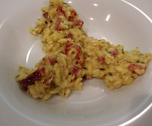

Dörrtomaten-Salami-Risotto
5 von 6zwiebeln, dörrtomaten, salami und vialone reis in olivenoel andünsten. mit weisswein und gemüsebouillon ablöschen. ca. 25 min auf kleiner stufe köcheln lasen, regelmässig heisses wasser nachgiessen. ein gutsch rahm und parmesan dauzu geben und würzen. noch etwas butter rein, wenige minuten ziehen lassen.
